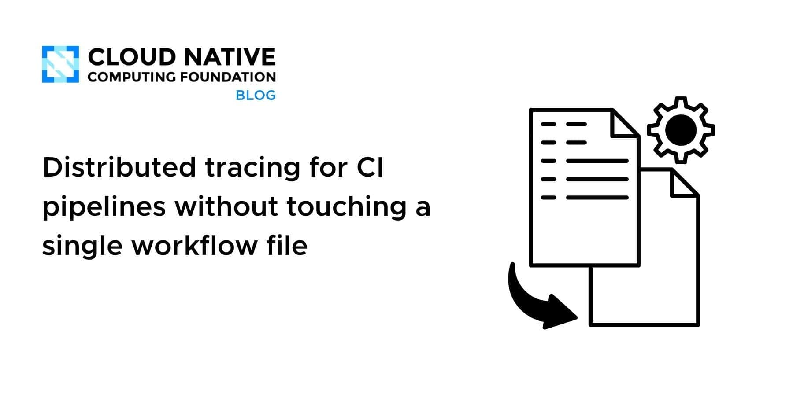
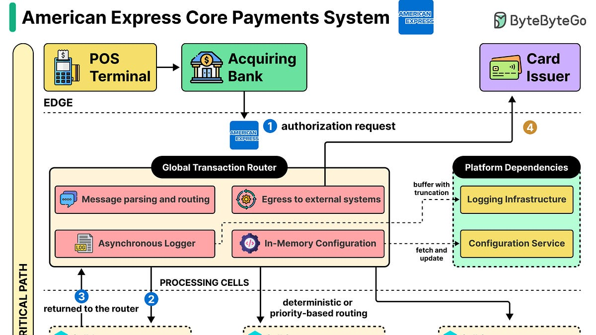
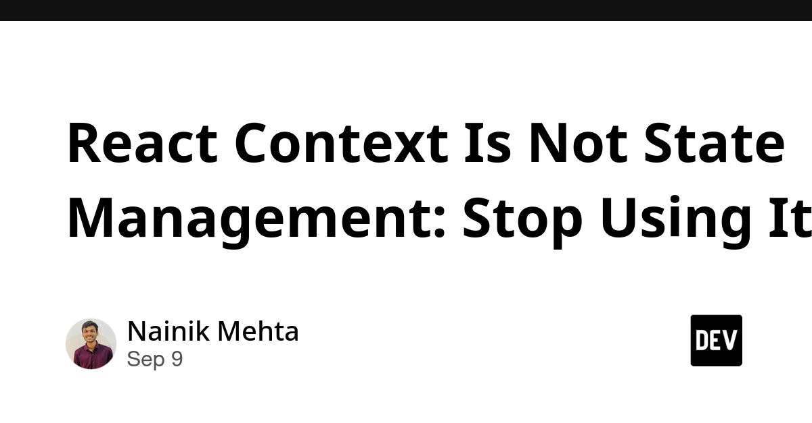
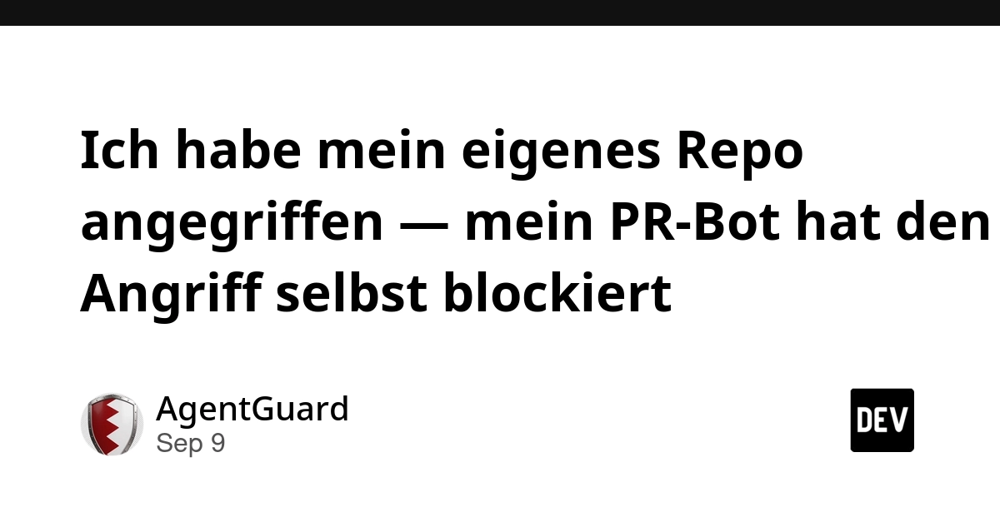
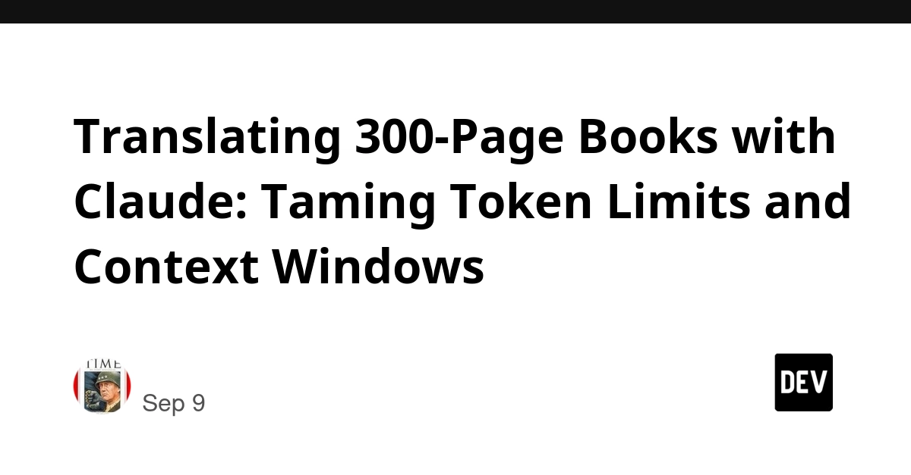
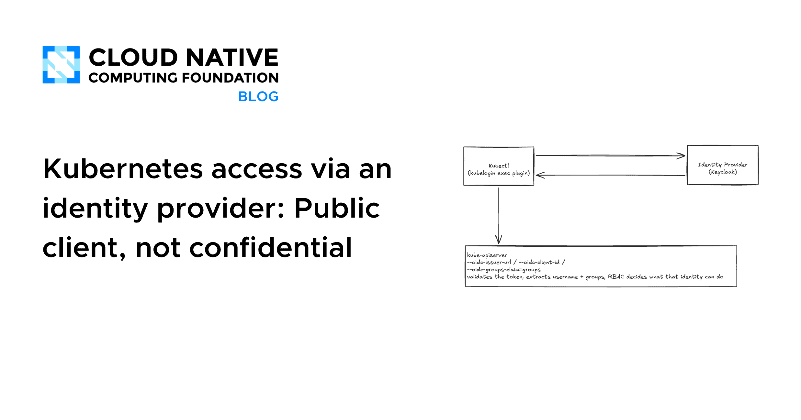
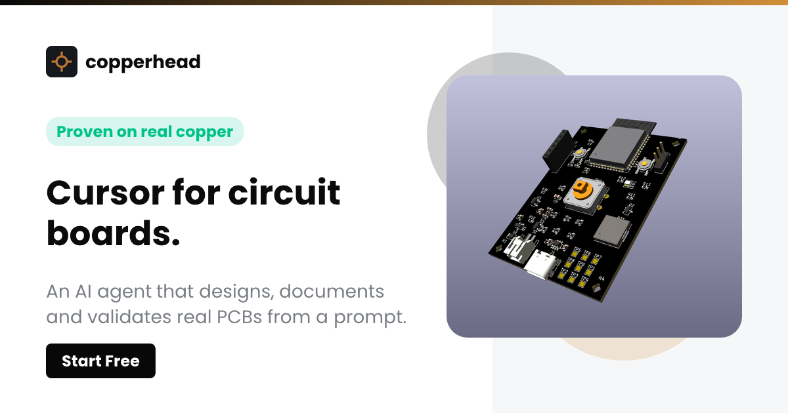

🔥 Top 3 (must read)
How well do agents use test/verification techniques?
(HN discussion) Dan Luu looks at how coding agents actually test and verify the code they write, and where they cut corners. The piece checks whether agents run tests, read failures, and pick the right verification method, or just claim success. Why it matters: you care about both test strategy and how teams adopt coding agents. This is the overlap point, and it gives you concrete things to check when reviewing agent-written PRs.
D
Distributed tracing for CI pipelines without touching a single workflow file
GitHub Actions usage grows across an org, but nobody knows which workflows are slow, which are flaky, or how long jobs wait in the queue. This post shows how to turn CI runs into OpenTelemetry traces from the outside, with no edits to workflow YAML. Why it matters: flaky and slow pipelines are a delivery problem an EM owns. Tracing gives you numbers instead of guesses, and the zero-touch setup means no team has to change its workflows first.

Built for Reliability: How American Express Processes Payments at Scale
ByteByteGo walks through Amex's cell-based architecture, where traffic is split into isolated cells so one failure does not take down everything. It follows a single transaction through the system and shows how payments still complete when some services are down. Why it matters: a clean scalability case study for your distributed-systems interest. The cell pattern is also useful thinking for any payment or entitlement backend you run.

🛠 Tools & releases
Kubernetes v1.37: Advancing Workload-Aware Scheduling
Workload and PodGroup APIs (gang scheduling), workload-aware preemption, and shared DRA ResourceClaims all move to Beta. Mostly for batch and AI/ML jobs, but worth knowing if you run K8s.
K
React Context Is Not State Management: Stop Using It
Argues Context is a dependency-injection tool, not a state store. Good ammo for a team discussion on when to reach for a real state library.

🤖 AI for developers
AgentGuard: I attacked my own repo, my PR bot blocked the attack
(German) — A CI gate that scans agent config files (AGENTS.md, skills, MCP servers, hooks) for smuggled instructions. The author planted 12 attacks and reports honestly which ones got through. Relevant if your team commits Claude Code config to shared repos.

The VMs Powering Mobile Agents (Instinct, Claude Code)
(HN) — How mobile-first agent products run isolated VMs behind the scenes. Useful background on the sandbox layer under the tools you use.
R
Translating 300-Page Books with Claude: Taming Token Limits and Context Windows
Practical chunking strategy for long documents with the Claude API, and how to keep quality consistent across chunks.

👔 Engineering & teams
Kubernetes access via an identity provider: Public client, not confidential
Access control should be a day-zero item for on-prem clusters, and usually is not. Explains the OIDC public-client setup for kubectl users.

🎯 For me
Dan Luu on agent testing (Top 3) — the single best read today for your testing + AI-adoption angle.
CI pipeline tracing (Top 3) — directly useful for GitHub Actions visibility across your teams.
React Context article (Tools) — TypeScript/React state-management hygiene, good for code-review guidelines.
AgentGuard (AI) — security of shared Claude Code / agent configs in team repos.
💡 App ideas & indie builds
Kiddings — remember the things my daughter says
Parents take thousands of photos, but the best memories are often words: "Why is the moon following our car?" The app captures quotes and phases, not pictures. Great example of finding an unserved emotional need next to a crowded category (photo apps). A natural Flutter build.
R
Debug real bugs injected into OSS backend repos instead of LeetCode
A practice and hiring platform where you fix realistic bugs in real codebases. Solves the gap between algorithm puzzles and actual job skills. Relevant to your hiring process as an EM, and a template for "realistic practice" products in any skill area.
R
Actorle: 4 years later my 3-day side project still makes proper income
A Wordle-style game (guess the actor from filmography) built in 3 days in March 2022. Honest write-up on what kept it earning: a lucky newsletter feature, then daily-habit mechanics. Lesson: ship small, let the daily loop do the work.
R
Copperhead — Cursor for circuit boards
(HN) — AI assistant for PCB design. The pattern "Cursor for X" applied to a niche pro tool with painful UX. Ask: which specialist tool in your world has the same pain?

Tiny live public transport departure board for my desk
A small physical display showing the next bus or train. One tiny problem ("when do I need to leave?") solved with glanceable info. Good reminder that a minimal widget can beat a full app.
R
🎓 Try this
Set up OpenTelemetry tracing for your GitHub Actions pipelines using the zero-touch method in the CNCF post. Point it at one repo with a slow or flaky pipeline, and you will see queue time, per-job duration, and retry patterns in your existing tracing backend within an afternoon.